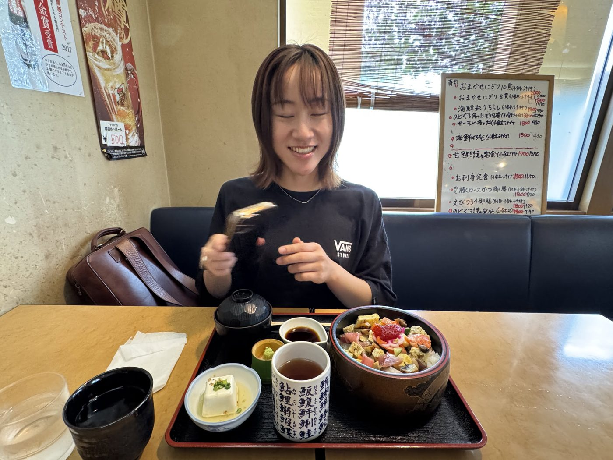
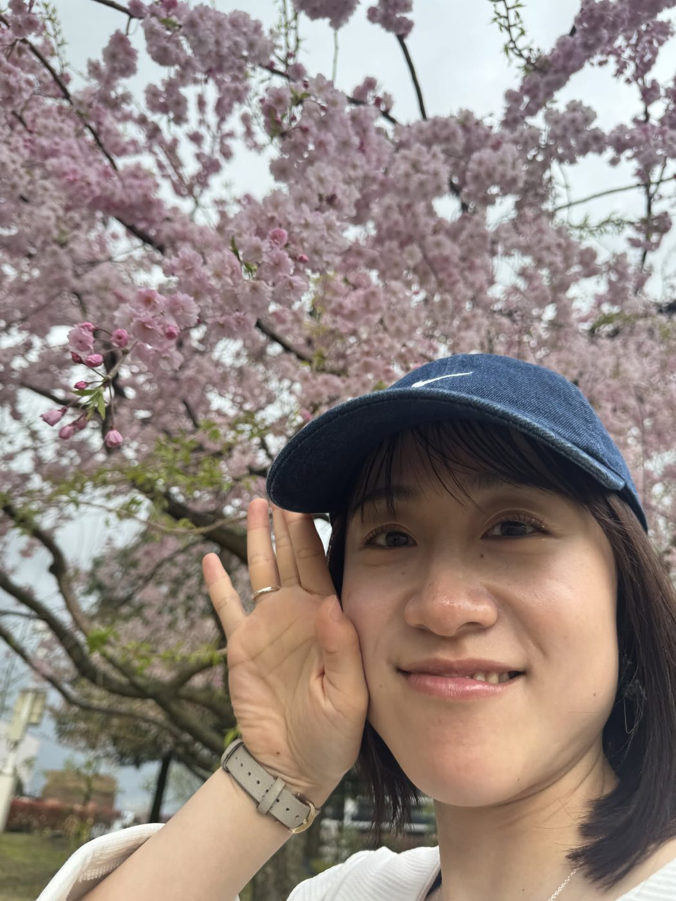

東京を、ゆりと
Tokyo, slowly
As if you were visiting a friend.
Price on requestBookings opening soon
東京を、ゆりと
As if you were visiting a friend.
Price on requestBookings opening soon
ゆっくり、座れる


TOUR 01 新橋の夜
Kimono bar-hopping
Evening · about 2.5 h


TOUR 02 清澄白河
Museum · garden · lunch
Morning · about 3 h


TOUR 03 神楽坂から新橋へ
& a Shimbashi Evening Hop
Afternoon into evening
Afternoon · about 3.5 h


YOUR GUIDE ゆり
Nurse · lives in Kanazawa · guides in kimono
See her Kanazawa tours ↗料金はお問い合わせください
Price on requestBookings opening soon